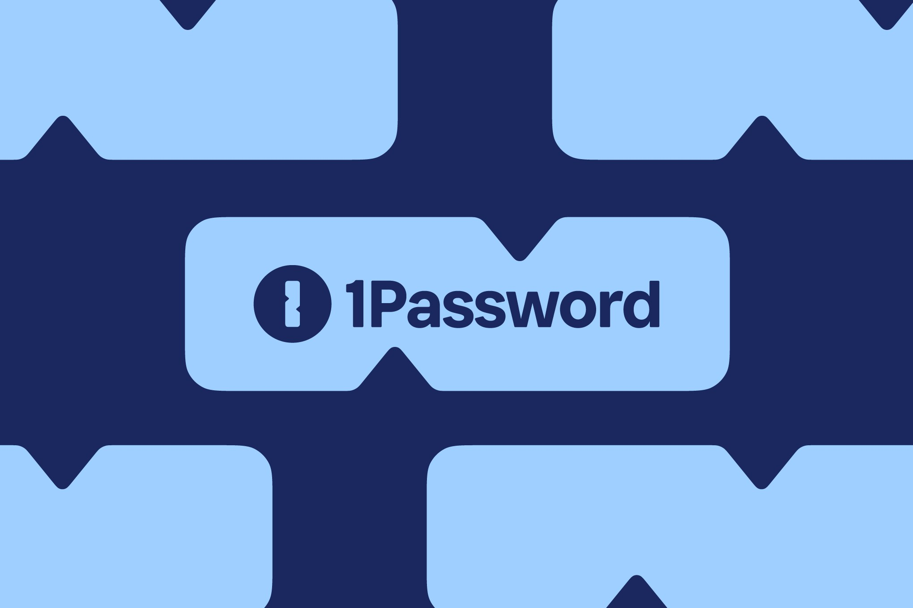

19 ноября 2026 года компания 1Password начала расследование после того, как атакующий получил доступ к корпоративному GitHub-аккаунту одного из сотрудников. Через этот аккаунт он проник в исходный код и выложил вредоносный код во внутренние (backend) сервисы — тот скачал административные данные о клиентах. Полный разбор инцидента компания опубликовала в своём блоге 25 ноября.
Под удар попала часть (не все) пользовательских записей: имена и адреса электронной почты, идентификаторы аккаунтов и пользователей, даты создания и последнего входа, открытые ключи (они открыты по дизайну), параметры протокола SRP (доступ к аккаунту они не дают), а также токены из служебных писем — приглашений, протоколирования (provisioning) и восстановления аккаунта. Плюс несекретные метаданные внутренней архитектуры. Скопирован и исходный код из приватных репозиториев, а доступ к CI/CD-системе компания тоже подтвердила.
Ключевое: содержимое хранилищ, ключи шифрования, ключи восстановления, сами приложения и расширения браузера не затронуты. 1Password принципиально не хранит ни мастер-пароль пользователя, ни Secret Key — секреты шифруются ключами, которые есть только у владельца. Отдельно компания подстраховалась: коды подтверждения в письмах-приглашениях удлинили с шести цифр до десяти алфавитно-цифровых символов, чтобы их нельзя было подобрать. Все потенциально скомпрометированные внутренние креденшелы отозваны и перевыпущены, доступ GitHub-аккаунта отключён, а работу по сдерживанию инцидента проверяют независимые эксперты по кибербезопасности. Улик массовых захватов аккаунтов через утёкшие токены пока не нашли.
Главный практический риск теперь — волна фишинга «от имени 1Password»: повода сменить пароль инцидент не даёт, но злоумышленники отлично эксплуатируют сами новости о взломе. Правила простые: 1Password никогда не спрашивает мастер-пароль и Secret Key по почте, в SMS или звонком; вводить их можно только в официальном приложении или на официальном сайте, который вы открыли сами. Всё подозрительное — на support@1password.com.
Инцидент — учебниковый пример компрометации через цепочку поставок разработки: не баг в продукте и не фишинг клиента, а украденный токен разработчика плюс CI/CD. Для индустрии, которая прямо сейчас отдаёт всё больше пайплайнов ИИ-агентам с доступом к репозиториям, это напоминание: самый ценный ключ часто лежит не в хранилище, а в кармане сотрудника.